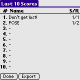

The quiz is setup using the controls on the Preferences screen. First select the Quiz Type. You can choose between Calculate or Solve. In Calculate mode you always has so find the right hand side of the quiz - that is, the quizzes are on the form:
The quiz is setup using the controls on the Preferences screen. First select the Quiz Type. You can choose between Calculate or Solve. In Calculate mode you always has so find the right hand side of the quiz - that is, the quizzes are on the form:
In MathAce you train simple math - addition, subtraction, multiplication and division. You setup the characteristica of the quiz - if it should be timed, what kind of operations you'd like, sizes of the operands, size of the answer and if you'd like negative numbers to be in the quiz.
MathAce will then display a simple equation for you to solve. MathAce keeps tracks of your successes and failures. The Last 10 scores can be exported to Memo Pad.
Installation of MathAce is like installing any other Palm OS program:
When the synchronization is done you will have a 'MathAce' icon in the Unfiled category on your Palm PDA. Feel free to move MathAce to another category.
When starting MathAce you will be presented with a short menu. Select Preferences to set the characteristicas of the quiz. Select Beam Preferences to beam the preferences settings to another device. Select Show Scores to view the Last 10 Scores. Select Clear Scores to clear the Last 10 Scores list - you will be asked to confirm your action. Select Start Quiz to start the quiz.
The quiz is setup using the controls on the Preferences screen. First select the Quiz Type. You can choose between Calculate or Solve. In Calculate mode you always has so find the right hand side of the quiz - that is, the quizzes are on the form:
x + y = _
x - y = _
x * y = _
x / y = _
In Solve mode you will have to solve the equation. Depending on what you select in the Solve list you will get the following kind of quizzes:
x + _ = y
_ - x = y
x * y = _
If Solve is set to Left hand side only then only the first two kind of quizzes will be shown. If Solve is set to Both Sides then all kind of quizzes will be shown.
Select what kind of Scoring should be used. If you select First Guess then a point will only be scored if the first guess is correct. If Correct Guess is chosen, then a point will be scored whenever a correct answer is given. The former is more restrictive and was the default in MathAce up to version 1.5.
Select the size of the Max Operand or Max Answer. If the Max Operand is set to f.ex. 10 then the value to be guessed is no larger than 10 - other operands may be larger, though. So a quiz like 64 / 8 is valid. The Max Answer limits all the operands to be lower or equal to the threshold. So if Max Answer is set to f.ex. 10, then a quiz like 5 + 3 would be possible. The Max Answer only works for addition and subtraction quizzes.
The Min Operand value controls the lower bound of the quiz. If Min Operand is set to 2 and Max Operand is set to 10 then the quiz will be created using the numbers from 2 to 10.
Select the Operations to be chosen from. Also check the Allow Negative Numbers to enable signed quizzes (like in 5 * -3 and so forth).
Select if the quiz should be timed. A blank Timed field or a value of 0 disable the timer. Other values enable the timer for that many minutes.
When running the quiz you will get a display looking like a simple calculator. The buttons on the right, from top to bottom are: backspace, clear all, sign and OK (submit the answer). In the upper right corner you have a button to end the current quiz. In a timed game the time remaining will be shown between the 0 and OK buttons (not shown). When you press a button the time seems halt; but fear not - the timer is counted down in the background and as soon as you release the button the timer will catch up.
When the quiz is over you wil get a chance to enter your name for the Last 10 Scores list. Select Save Score to save the score. Select Don't Save Score to go to the main form without saving the score.
The Last 10 Scores list lists the last 10 scores (whoah!) The list is not to be taken as a High Score list. Tap an entry to view the details for that entry. Select Export to export the list to Memo Pad.
A detailed view of a randomly chosen entry. This view contains scores, rounds and the selected preferences for the quiz. This is more less how each entry in the Export list will look like.